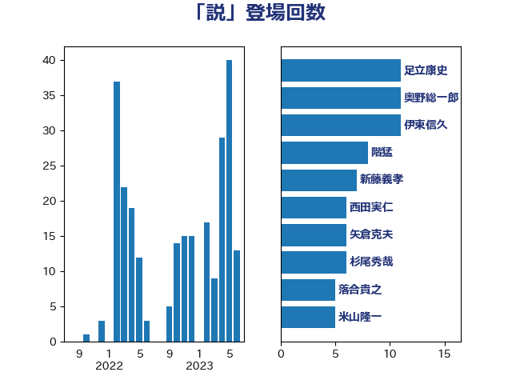

単語「説」

| 足立康史 | 日本維新の会 | 11 回 |
| 奥野総一郎 | 立憲民主党 | 11 回 |
| 伊東信久 | 日本維新の会 | 11 回 |
| 階猛 | 立憲民主党 | 8 回 |
| 新藤義孝 | 自由民主党 | 7 回 |
| 西田実仁 | 公明党 | 6 回 |
| 矢倉克夫 | 公明党 | 6 回 |
| 杉尾秀哉 | 立憲民主党 | 6 回 |
| 落合貴之 | 立憲民主党 | 5 回 |
| 米山隆一 | 立憲民主党 | 5 回 |
| 浅野哲 | 国民民主党 | 5 回 |
| 小西洋之 | 立憲民主党 | 5 回 |
| 鈴木義弘 | 国民民主党 | 4 回 |
| 玉木雄一郎 | 国民民主党 | 4 回 |
| 馬場伸幸 | 日本維新の会 | 3 回 |
| 柴田巧 | 日本維新の会 | 3 回 |
| 松野博一 | 自由民主党 | 3 回 |
| 守島正 | 日本維新の会 | 3 回 |
| 堀井巌 | 自由民主党 | 3 回 |
| 吉良州司 | 無所属 | 3 回 |
| 北神圭朗 | 無所属 | 3 回 |
| 三木圭恵 | 日本維新の会 | 3 回 |
| 阿部弘樹 | 日本維新の会 | 2 回 |
| 野間健 | 立憲民主党 | 2 回 |
| 赤池誠章 | 自由民主党 | 2 回 |
| 菊田真紀子 | 立憲民主党 | 2 回 |
| 芳賀道也 | 国民民主党 | 2 回 |
| 神谷宗幣 | 参政党 | 2 回 |
| 水野素子 | 立憲民主党 | 2 回 |
| 杉久武 | 公明党 | 2 回 |
| 打越さく良 | 立憲民主党 | 2 回 |
| 岸田文雄 | 自由民主党 | 2 回 |
| 岩谷良平 | 日本維新の会 | 2 回 |
| 山本有二 | 自由民主党 | 2 回 |
| 山下貴司 | 自由民主党 | 2 回 |
| 大塚耕平 | 国民民主党 | 2 回 |
| 吉田宣弘 | 公明党 | 2 回 |
| 古賀千景 | 立憲民主党 | 2 回 |
| 古庄玄知 | 自由民主党 | 2 回 |
| 前川清成 | 日本維新の会 | 2 回 |
| 鎌田さゆり | 立憲民主党 | 1 回 |
| 逢坂誠二 | 立憲民主党 | 1 回 |
| 足立敏之 | 自由民主党 | 1 回 |
| 西村智奈美 | 立憲民主党 | 1 回 |
| 藤巻健太 | 日本維新の会 | 1 回 |
| 羽田次郎 | 立憲民主党 | 1 回 |
| 穀田恵二 | 日本共産党 | 1 回 |
| 礒崎哲史 | 国民民主党 | 1 回 |
| 石橋通宏 | 立憲民主党 | 1 回 |
| 石川大我 | 立憲民主党 | 1 回 |
| 田中健 | 国民民主党 | 1 回 |
| 片山さつき | 自由民主党 | 1 回 |
| 浜地雅一 | 公明党 | 1 回 |
| 浅田均 | 日本維新の会 | 1 回 |
| 浅川義治 | 日本維新の会 | 1 回 |
| 櫻井周 | 立憲民主党 | 1 回 |
| 榛葉賀津也 | 国民民主党 | 1 回 |
| 梅村聡 | 日本維新の会 | 1 回 |
| 梅村みずほ | 日本維新の会 | 1 回 |
| 柳ヶ瀬裕文 | 日本維新の会 | 1 回 |
| 林芳正 | 自由民主党 | 1 回 |
| 杉本和巳 | 日本維新の会 | 1 回 |
| 市村浩一郎 | 日本維新の会 | 1 回 |
| 川合孝典 | 国民民主党 | 1 回 |
| 山井和則 | 立憲民主党 | 1 回 |
| 小田原潔 | 自由民主党 | 1 回 |
| 小川淳也 | 立憲民主党 | 1 回 |
| 太栄志 | 立憲民主党 | 1 回 |
| 國重徹 | 公明党 | 1 回 |
| 吉田久美子 | 公明党 | 1 回 |
| 古賀之士 | 立憲民主党 | 1 回 |
| 友納理緒 | 自由民主党 | 1 回 |
| 勝部賢志 | 立憲民主党 | 1 回 |
| 佐々木さやか | 公明党 | 1 回 |
| 住吉寛紀 | 日本維新の会 | 1 回 |
| 中野洋昌 | 公明党 | 1 回 |
| 中島克仁 | 立憲民主党 | 1 回 |